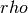
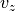
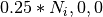

LBOutput - abstract base class for analysis / output in LB simulations¶
Abstract base class for arbitrary output from LB simulations. At the moment, the implemented realisations are:
espressopp.analysis.LBOutputScreento output local density  and  component of the velocity as a function of the coordinate .
.espressopp.analysis.LBOutputVzInTimeto output velocity component of a specific lattice site (the value used at the moment is ) in time.espressopp.analysis.LBOutputVzOfXto output simulation progress and control flux conservation when using MD to LB coupling.
Note
Other types of output classes are possible. It is a subject of user requests.